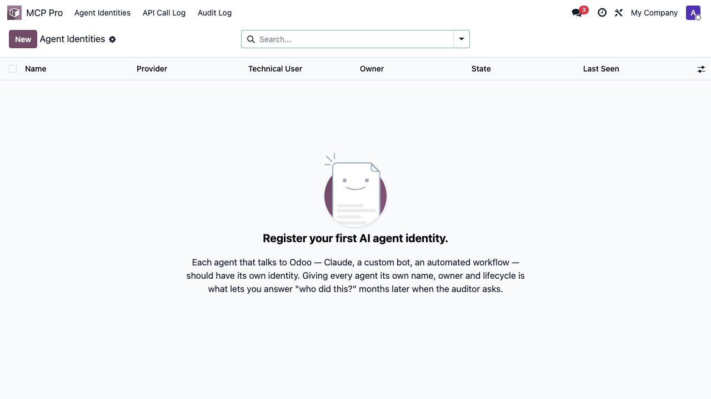
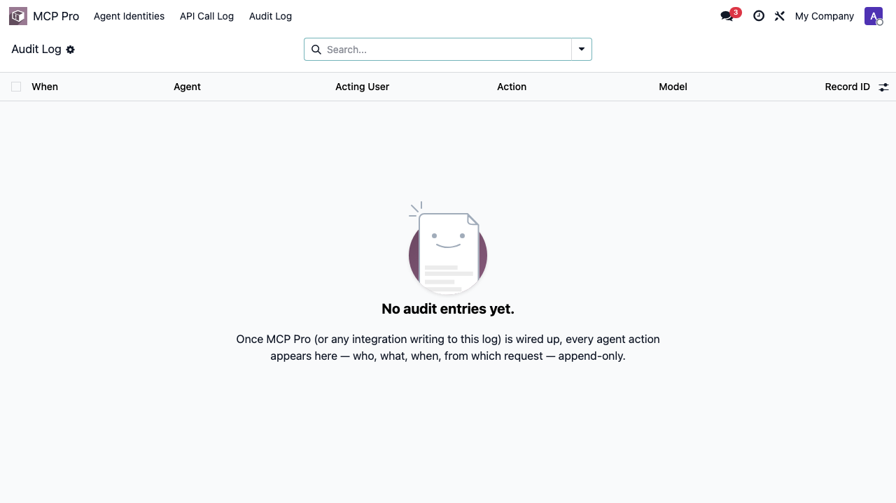
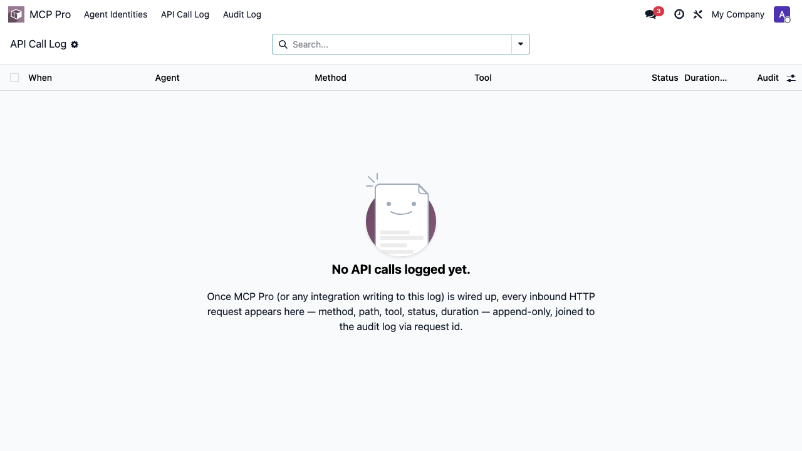

Claude reading and writing real Odoo records via the MCP Pro server.
Pull open quotes, follow up with customers, create sales orders, reconcile invoices — straight from chat. Works on desktop and mobile. Works on Odoo Online, Odoo.sh and on-premise.
Claude reading and writing real Odoo records via the MCP Pro server.


Claude, ChatGPT, Gemini, Microsoft Copilot, Mistral — or any other MCP-compatible AI client. One connector, every model.
"Our team lives inside Odoo. The Pantalytics MCP server has changed how we work. Pulling open quotes, following up with customers, creating sales orders, straight from chat. Saves us real hours every week."
Freek Bos — Thuisbatterijnederland.nl
"The MCP is working great! Definitely worth it."
Daniel Degetau — Pigmentum
"Love love love your tool!"
Andrew Law — Odoo It Yourself
Sign in with Google or Microsoft on the MCP Pro server (5-minute setup). Point it at your Odoo Online, Odoo.sh or on-premise instance.
Connect Claude Desktop, ChatGPT, Cursor, Gemini, Copilot or any MCP client — one shared MCP endpoint serves them all. Existing Odoo access rights apply.
This free Odoo addon registers every AI agent that talks to your data, logs every API call and ORM action to an append-only trail, and gives operators a single place to oversee it.
Open source, EU-hosted. More on the server: pantalytics.com/apps/odoo-mcp-server
The MCP Pro server runs outside Odoo. This addon installs inside Odoo and gives operators what the server alone cannot — the oversight surface for AI-driven access to your ERP.
Register every AI agent that talks to your Odoo. Owner, provider, lifecycle (draft / active / suspended / revoked), last-seen.

Every agent action writes an immutable row, linked to the agent identity, the acting user, the model, the record, the request id and the prompt hash. Manager cannot edit or delete — AccessError is raised on attempts.

One row per inbound MCP/API call. Method, path, tool, HTTP status, duration. Joined to the audit log via request id so you can trace a single AI prompt all the way down to the records it changed.

Standard Odoo was designed for humans clicking through forms. When an AI agent fires 5,000 actions per hour against the same user account, the gaps show:
This module fills those gaps with thin, well-bounded primitives. It does not replace Odoo's ACLs — it instruments around them.
Questions or issues? support@pantalytics.com